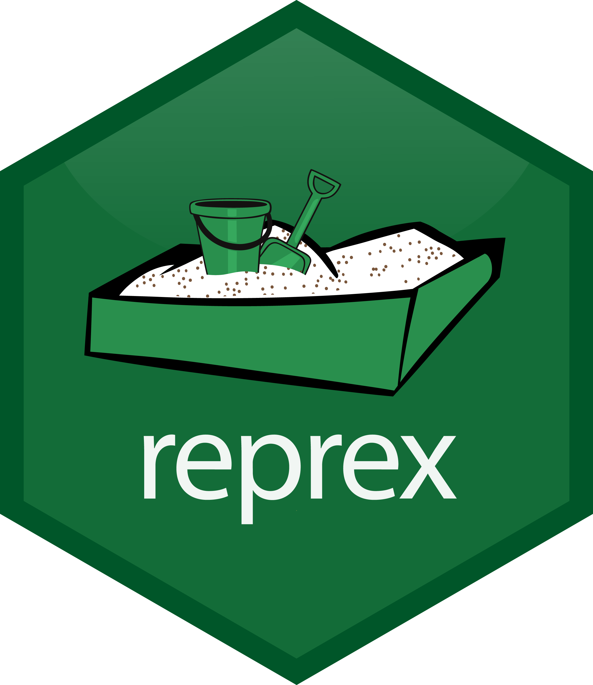
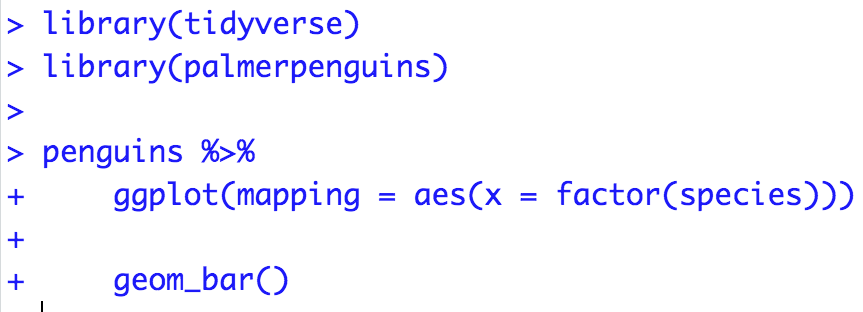

Data Wrangling
Grayson White
Math 241
Week 3 | Fall 2025
Announcements
- Office Hours Schedule
- Problem Set 1 due Thursday 9am.
Week 3 Goals
Mon Lecture
Think about reproducibility and learn how to ask coding questions well.
Motivate and work on data wrangling.
Wed Lecture
- Plot animation.
- GitHub workflow review.
Reproducible Workflow
One where if you shared your data and work with someone else, they could reproduce your results.
Not the same as replication: Where someone collects new data following your same design to see if they get the same results.
Quartodocuments allow us to include ourRcode, output, and narrative in the same place.- Load the raw data.
- Be transparent about all the analysis steps.
- Even if you don’t showcase the
Rcode in the output file, it is contained in theqmdfile.
Creating reproducible examples with reprex

Why do I need to learn to create reproducible technical examples?
- So that you can ask and answer questions in our class Slack Workspace or Stack Overflow or other
Rhelp sites!
First, let’s take a look at some bad examples!
What is wrong with this coding question?
I am trying to create a plot and I can’t get the bars to do what I want them to. Help?!
What is wrong with this coding question?
I want to do the following but it isn’t working:
thing <- read.csv(“long/file/path/thing.csv”)
ggplot(thing, aes(x = factor(that))) + geom_bar()
Help?!
What is wrong with this coding question?
I want to reorder the bars of my plot but can’t get it working. Help!
library(tidyverse)
library(palmerpenguins)
penguins <- penguins %>%
group_by(species) %>%
mutate(mean_flipper = mean(flipper_length_mm)) %>%
ungroup() %>%
mutate(long = case_when(flipper_length_mm < mean(flipper_length_mm) ~ "no",
flipper_length_mm >= mean(flipper_length_mm) ~ "yes"))
penguins %>%
ggplot(mapping = aes(x = factor(species))) +
geom_bar()What is wrong with this coding question?
I want to reorder the bars of my plot but can’t get it working. Help!
What makes a good coding question?
It uses a minimal dataset to reproduce the issue.
It includes the shortest amount of runnable code necessary to reproduce the issue.
It doesn’t wreak havoc on other people’s computers.
It includes code and output so that others don’t have to run it!
- It includes any necessary information on the used packages, R version, system, etc.
- Should not be a concern for our class Slack since we are all on the same RStudio Server.
- Can use
packageVersion("tidyverse")orsessionInfo()to find this information.
Minimal Dataset: two good options
Create a toy data frame.
Use a built-in dataset or a dataset from a particular package.
# A tibble: 344 × 10
species island bill_length_mm bill_depth_mm flipper_length_mm body_mass_g
<fct> <fct> <dbl> <dbl> <int> <int>
1 Adelie Torgersen 39.1 18.7 181 3750
2 Adelie Torgersen 39.5 17.4 186 3800
3 Adelie Torgersen 40.3 18 195 3250
4 Adelie Torgersen NA NA NA NA
5 Adelie Torgersen 36.7 19.3 193 3450
6 Adelie Torgersen 39.3 20.6 190 3650
7 Adelie Torgersen 38.9 17.8 181 3625
8 Adelie Torgersen 39.2 19.6 195 4675
9 Adelie Torgersen 34.1 18.1 193 3475
10 Adelie Torgersen 42 20.2 190 4250
# ℹ 334 more rows
# ℹ 4 more variables: sex <fct>, year <int>, mean_flipper <dbl>, long <chr>Minimal Code
Include the necessary libraries.
Test run the code in a restarted R session to make sure it is runnable!

Make sure your code is copy-and-paste-able!
Don’t copy from the console.
Make sure your code is copy-and-paste-able!

Now we have our reproducible example:
How can I reorder the bars in the ggplot to go from the most frequent to the least frequent category?

How can we easily share it?
- Using the
reprex()function in thereprexpackage.
reprex Practice Time!
But first: Q: What is an R script file?
- A text file for entering R commands.
Q: How is an R script file different from a Quarto or RMarkdown document?
- You only put code in an
Rscript.
- If you add any text you must comment it out with
#. - Think of it as a single
Rchunk that you won’t knit into an output document. - Useful when writing a lot of code and want to compartmentalize.
reprex Practice Time!
In Session, select “Clear Workspace” and then “Restart R”.
Open a script file and include in the top line:
- Put the code you want to use in the script file and make sure it runs.
Surround the code with
reprex({ ... }, venue = "slack")and run it.An md file will pop up. Copy all the contents of that file.
Head over to the
#coding-qachannel and paste in the contents as a reply to thereprexpractice message. A text box will pop-up and select “Apply”.Above your code, type your question. Then hit “Send”.